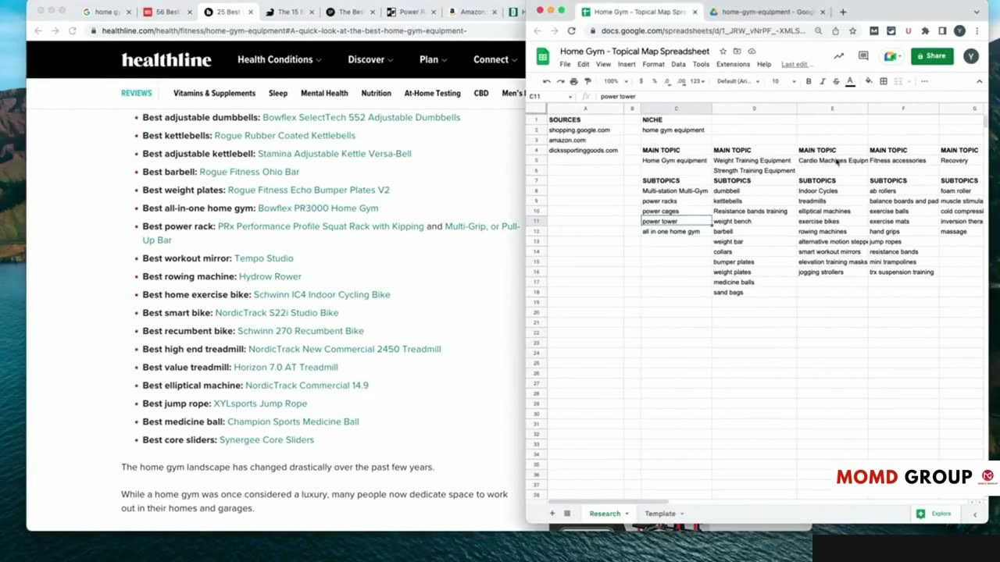
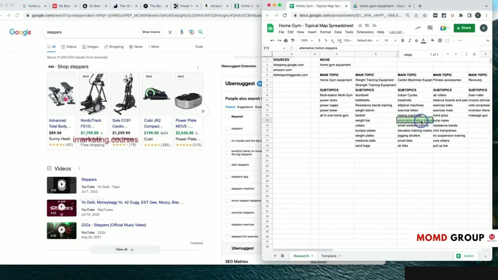
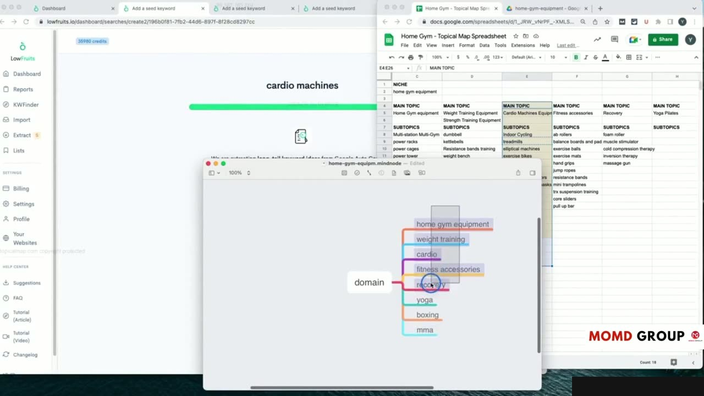
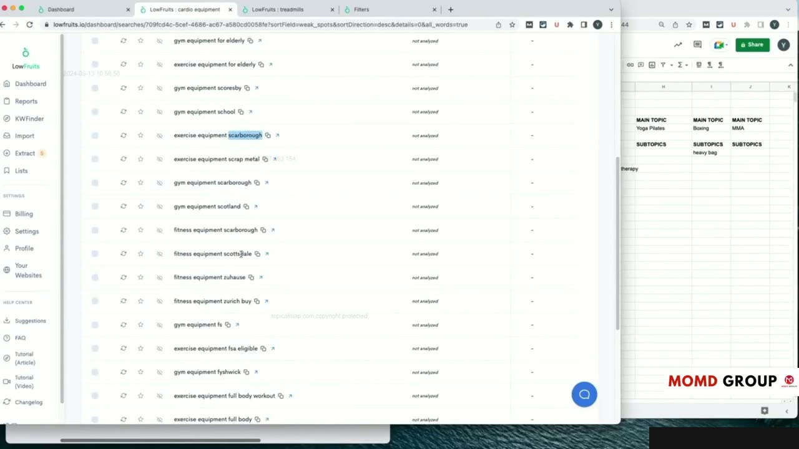

Practical Case Study: Step-by-Step Topical Map Creation (Part 2)
Thực hành Gom cụm Từ khóa Ngữ nghĩa trên Bảng tính
Trong phần 2 của Case Study (video dài 21 phút), Yoyao bắt tay vào giai đoạn phức tạp và đòi hỏi tư duy sắc bén nhất: Gom cụm ngữ nghĩa (Semantic Keyword Clustering).
Yoyao trực tiếp thao tác phân nhóm từng dòng từ khóa:
- Xác định từ khóa chính (Parent Keyword) đại diện cho tiêu đề bài viết.
- Gom các từ khóa biến thể, từ khóa phụ và câu hỏi liên quan vào cùng một hàng để làm nhiệm vụ bổ trợ cho các thẻ tiêu đề H2, H3 trong bài.
- Kiểm tra trực tiếp trên Google Search khi gặp các cặp từ khóa nhạy cảm có nguy cơ trùng lặp ý định.
Học viên được chứng kiến cách xử lý thực tế với những tình huống mập mờ mà các công cụ tự động thường phân loại sai.

Thiết lập Ma trận Phân cấp Chủ đề (Topic Hierarchy)
Sau khi đã có các cụm bài viết, Yoyao sắp xếp chúng vào một ma trận phân cấp 3 tầng chặt chẽ:
- Tầng 1 - Cốt lõi (Core Pillar): Các bài viết hướng dẫn toàn diện bao quát toàn bộ danh mục chủ đề lớn.
- Tầng 2 - Chuyên đề (Sub-pillar): Các bài viết đào sâu vào từng khía cạnh kỹ thuật hoặc phân khúc sản phẩm riêng biệt.
- Tầng 3 - Hỗ trợ (Supporting Nodes): Các bài viết trả lời câu hỏi ngắn, so sánh chi tiết hoặc giải đáp thắc mắc chuyên biệt liên kết ngược lên Tầng 1 và Tầng 2.
Mô hình phân tầng này tạo nên một hệ thống phân phối PageRank nội bộ cực kỳ hiệu quả trên toàn trang.

Xác lập Quy tắc Đặt URL Slug Chuẩn SEO Semantic
Yoyao giải thích chi tiết về việc lựa chọn cấu trúc đường dẫn URL cho dự án:
So sánh ưu nhược điểm giữa cấu trúc URL dạng thư mục phân cấp (/silo/sub-silo/post-name/) và cấu trúc URL dạng phẳng (/post-name/). Yoyao đưa ra khuyến nghị thực chiến dựa trên quy mô website và nền tảng CMS sử dụng.
Quy chuẩn đặt Slug ngắn gọn, chứa từ khóa hạt giống và tuyệt đối không nhồi nhét giúp URL thân thiện với cả người dùng lẫn công cụ tìm kiếm.

Hoàn thiện Bảng Dự thảo Topical Map Hoàn chỉnh
Kết thúc phần 2, toàn bộ bản đồ chủ đề hoàn chỉnh đã được định hình với đầy đủ các trường thông tin tiêu chuẩn.
Yoyao rà soát lại toàn bộ bản đồ để đảm bảo không bỏ sót bất kỳ góc khuất nào của thị trường ngách, sẵn sàng chuyển giao cho đội ngũ biên tập nội dung.

Nguồn và đối chiếu
- Topical Maps Unlocked 2.0 · 11-From Theory to Practice Module/video 02.mp4 (Video bài học chính).
- Bản tiếng Anh không có video riêng cho bài học này; nội dung đối chiếu trực tiếp từ slide và video chính.